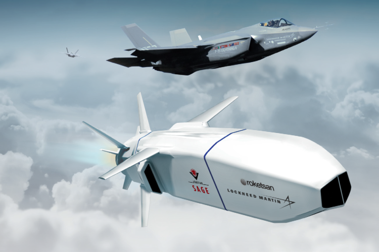
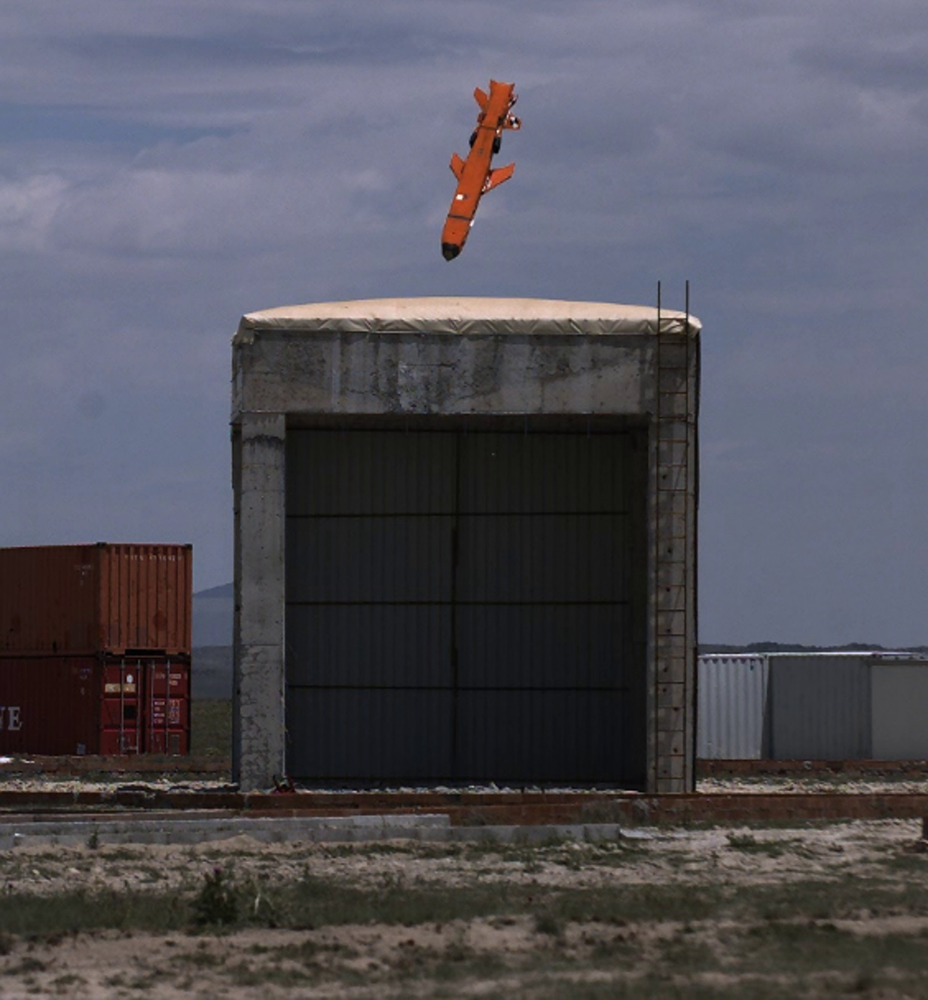
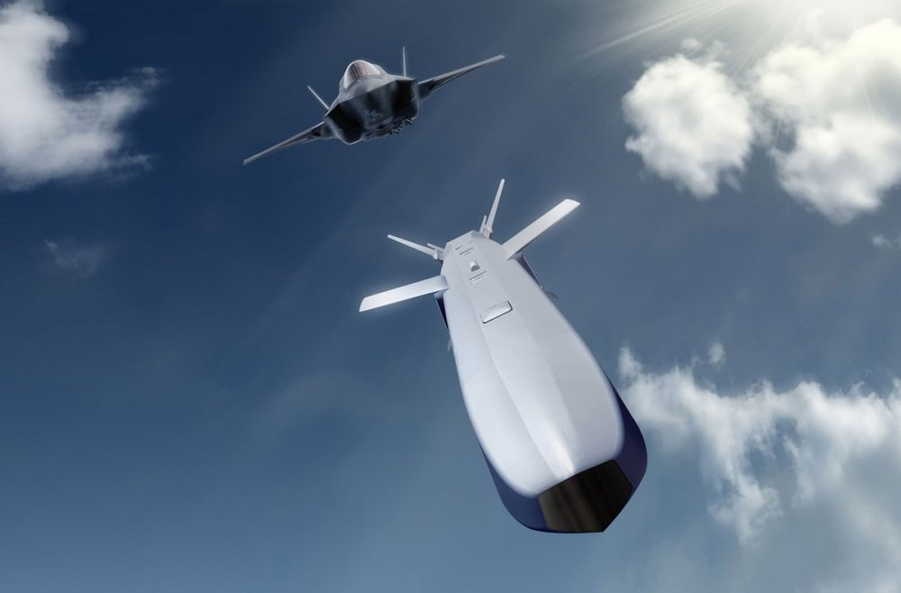

Düşük Görünürlüklü Stand-Off Mühimmat
SOM-J, yoğun korunan kara ve deniz hedeflerine karşı kullanılmak üzere geliştirilen, azaltılmış görünürlüğe sahip havadan satıha stand-off mühimmattır.
Sistem, uçakların iç silah istasyonunda veya kanat altında kullanılabilecek kompakt bir yapı hedefiyle geliştirilmiştir. Bu yaklaşım, özellikle düşük görünürlüklü platformlarla kullanım için önemlidir.
SOM-J; veri bağı, gelişmiş seyrüsefer altyapısı, görüntüleyici kızılötesi arayıcı ve otomatik hedef algılama gibi özellikleriyle görev sırasında esnek hedefleme ve yüksek hassasiyetli terminal angajman sunar.
200 km
3.9 m
540 kg
140 kg
IIR
Yüksek subsonik
| Mühimmat Tipi | Havadan satıha stand-off mühimmat / seyir füzesi |
| Adı | SOM-J |
| Görev Alanı | Yoğun korunan kara ve deniz hedeflerine karşı hassas taarruz |
| Menzil | 200 km |
| Uzunluk | 3.9 m |
| Ağırlık | 540 kg |
| Hız | Yüksek subsonik |
| Arayıcı Başlık | IIR kızılötesi görüntüleyici arayıcı |
| Güdüm | Ataletsel navigasyon sistemi, anti-jam GPS, yeryüzü referanslı navigasyon, otomatik hedef algılama |
| Veri Bağı | Network-enabled warfare tabanlı veri bağı |
| Harp Başlığı Ağırlığı | 140 kg |
| Harp Başlığı Tipi | Yüksek patlayıcı blast fragmentation, yarı zırh delici |
| Hedef Tipi | Sabit kara hedefleri ve deniz hedefleri |
| Platformlar | Muharip uçaklar; resmî kaynaklarda F-35 ve F-16 platformları belirtilmektedir |
| Taşıma Şekli | İç silah istasyonu veya kanat altı kullanımına uygun tasarım |
| Öne Çıkan Özellik | Kompakt boyutta, düşük görünürlüklü platformlara uyumlu, veri bağı destekli yerli stand-off mühimmat |
| Düşük Görünürlük | Azaltılmış görünürlük / düşük tespit edilebilirlik yaklaşımı |
| Görev Güncelleme | Uçuş sırasında hedef güncelleme |
| Görev İptali | Mission abort kabiliyeti |
| Yeniden Saldırı | Re-attack / yeniden saldırı modu |
| Görev Planlama | 3 boyutlu görev planlama |
| Zamanlama | ToT, DToT, SToT |
| Salvo Atış | Ripple / salvo fire desteği |
| Kullanım Konsepti | Hava savunma menzili dışından stand-off vuruş |
| Görev Esnekliği | Kara ve deniz hedeflerine karşı çok amaçlı kullanım |


